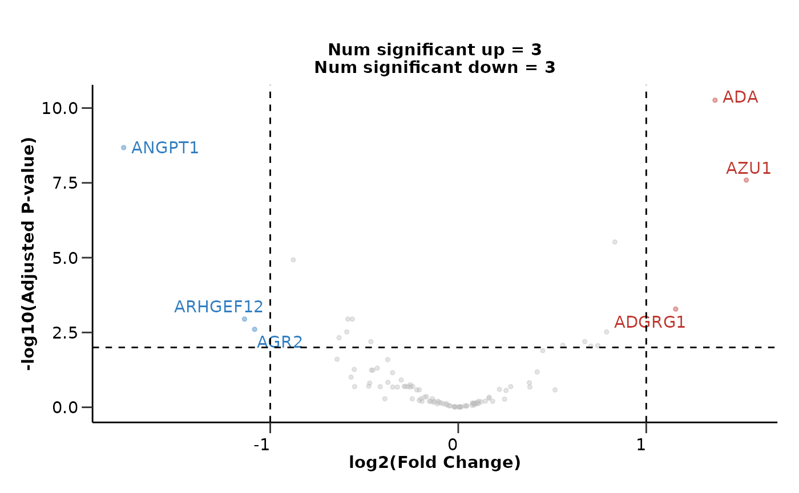
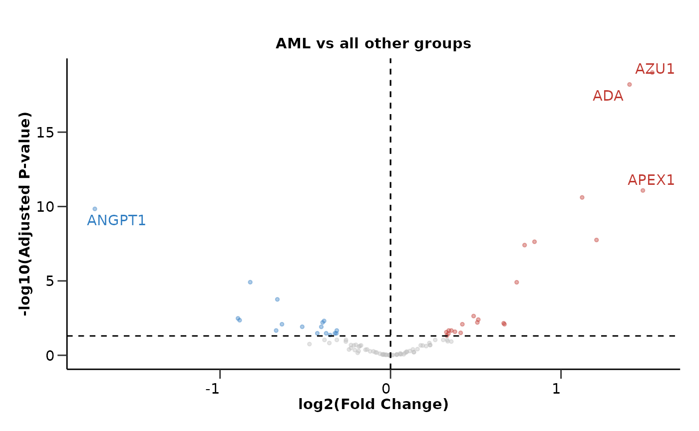
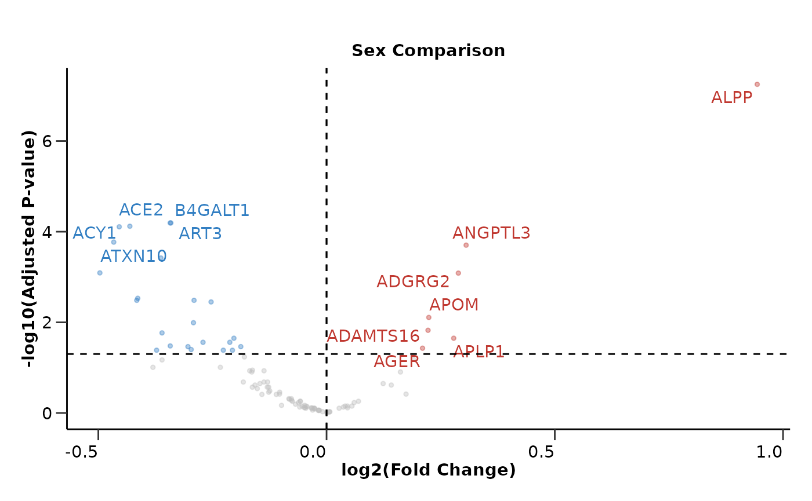

Differential Expression Analysis
Source:vignettes/differential_expression.Rmd
differential_expression.RmdThis vignette will guide you through the differential expression analysis of your data. We will load HDAnalyzeR, load the example data and metadata that come with the package and initialize the HDAnalyzeR object.
Loading the Data
library(HDAnalyzeR)
hd_obj <- hd_initialize(dat = example_data,
metadata = example_metadata,
is_wide = FALSE,
sample_id = "DAid",
var_name = "Assay",
value_name = "NPX")Running Differential Expression Analysis with limma
We will start by running a simple differential expression analysis
using the hd_de_limma() function. In this function we have
to state the variable of interest, the group of this variable that will
be the case, as well as the control(s). We will also correct for both
Sex and Age variables. After the analysis is
done, we will use hd_plot_volcano() to visualize the
results.
In the first example, we will run a differential expression analysis
for the AML case against the CLL control.
de_results <- hd_de_limma(hd_obj,
variable = "Disease",
case = "AML",
control = "CLL",
correct = c("Age", "Sex")) |>
hd_plot_volcano()
head(de_results$de_res)
#> # A tibble: 6 × 10
#> Feature logFC CI.L CI.R AveExpr t P.Value adj.P.Val B Disease
#> <chr> <dbl> <dbl> <dbl> <dbl> <dbl> <dbl> <dbl> <dbl> <chr>
#> 1 ADA 1.42 0.955 1.89 1.56 6.04 0.0000000250 2.50e-6 8.74 AML
#> 2 ADAM8 -1.23 -1.67 -0.795 1.74 -5.59 0.000000193 9.64e-6 6.77 AML
#> 3 AZU1 1.92 1.20 2.64 0.777 5.30 0.000000668 2.23e-5 5.57 AML
#> 4 ARID4B -1.38 -1.91 -0.847 1.85 -5.15 0.00000132 3.30e-5 4.92 AML
#> 5 ARTN 1.08 0.597 1.55 0.804 4.46 0.0000227 3.84e-4 2.22 AML
#> 6 ANGPT1 -1.71 -2.47 -0.948 0.992 -4.45 0.0000230 3.84e-4 2.21 AML
de_results$volcano_plot
We are able to state more control groups if we want to. We can also change the correction for the variables as well as both the p-value and logFC significance thresholds.
de_results <- hd_de_limma(hd_obj,
case = "AML",
control = c("CLL", "MYEL", "GLIOM"),
correct = "BMI") |>
hd_plot_volcano(pval_lim = 0.01, logfc_lim = 1)
de_results$volcano_plot
If we do not set a control group, the function will compare the case group against all other groups.
de_results <- hd_de_limma(hd_obj, case = "AML", correct = c("Age", "Sex")) |>
hd_plot_volcano()
de_results$volcano_plot
Customizing the Volcano Plot
We can customize the volcano plot further by adding a title and not displaying the number of significant proteins. We can also change the number of significant proteins that will be displayed with their names in the plot.
de_results <- hd_de_limma(hd_obj, case = "AML", correct = c("Age", "Sex")) |>
hd_plot_volcano(report_nproteins = FALSE,
title = "AML vs all other groups",
top_up_prot = 3,
top_down_prot = 1)
de_results$volcano_plot
Running Differential Expression Analysis with t-test
Let’s move to another method. We will use the
hd_de_ttest() that performs a t-test for each variable.
This function takes similar inputs with hd_de_limma() but
it cannot correct for other variables like Sex and
Age.
de_results <- hd_de_ttest(hd_obj, case = "AML") |>
hd_plot_volcano()
de_results$volcano_plot
The case of Sex-specific Diseases
If we have diseases that are sex specific like Breast Cancer for
example, we should consider run the analysis only with samples of that
sex. We can easily integrate that into our pipeline using the
hd_filter_by_sex() function. In that case, we would not be
able to correct for sex, as there will be only one sex “F” (female).
de_results <- hd_obj |>
hd_filter_by_sex(variable = "Sex", sex = "F") |>
hd_de_limma(case = "BRC", control = "AML", correct = "Age") |>
hd_plot_volcano()
de_results$volcano_plot
Running DE against other Variables
Other Categorical Variables
We could also run differential expression against another categorical
variable like Sex by changing the variable
argument.
de_results <- hd_de_limma(hd_obj, variable = "Sex", case = "F", correct = "Age") |>
hd_plot_volcano(report_nproteins = FALSE, title = "Sex Comparison")
de_results$volcano_plot
Continuous Variables
Moreover, we can also perform Differential Expression Analysis
against a continuous variable such as Age. This can be done
only with hd_de_limma()! We can also correct for
categorical and other continuous variables. In this case, no
case or control groups are needed.
de_results <- hd_de_limma(hd_obj, variable = "Age", case = NULL, correct = c("Sex", "BMI")) |>
hd_plot_volcano(report_nproteins = FALSE, title = "DE against Age")
de_results$volcano_plotSummarizing the Results from Multiple Analysis
As a last step, we can summarize the results via
hd_plot_de_summary(). Let’s first run a differential
expression analysis for 4 different cases (1 vs 3).
res_aml <- hd_de_limma(hd_obj, case = "AML", control = c("CLL", "MYEL", "GLIOM"))
res_cll <- hd_de_limma(hd_obj, case = "CLL", control = c("AML", "MYEL", "GLIOM"))
res_myel <- hd_de_limma(hd_obj, case = "MYEL" , control = c("AML", "CLL", "GLIOM"))
res_gliom <- hd_de_limma(hd_obj, case = "GLIOM" , control = c("AML", "CLL", "MYEL"))
de_summary_res <- hd_plot_de_summary(list("AML" = res_aml,
"CLL" = res_cll,
"MYEL" = res_myel,
"GLIOM" = res_gliom),
class_palette = "cancers12")
de_summary_res$de_barplot
de_summary_res$upset_plot_up
de_summary_res$upset_plot_down
üìì Remember that these data are a dummy-dataset with artificial data and the results in this guide should not be interpreted as real results. The purpose of this vignette is to show you how to use the package and its functions.